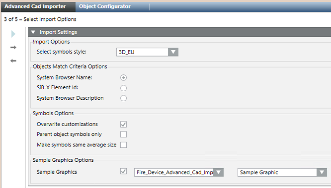

Select the Symbol Style, Object-Match Criteria, and other options
- You are on page 3 of 5: Select Options.
- In Import Options, use Select symbols style to set the style of symbols in the imported graphics. The list of available styles may vary depending on the installed extension modules. As a general reference, the following is a list of typical styles:
- Any: generic selection, NOT recommended (select a specific style)
- 2D_EU_AT, two-dimensional symbols for Austria
- 2D_EU_DE, two-dimensional symbols for Germany and DIN-approved graphics
- 2D_NA_NFPA, two-dimensional symbols for North America and NFPA-approved graphics
- 3D, three-dimensional symbols, generic, NOT recommended (select a more specific 3D-style)
- 3D_EU, three-dimensional symbols for Europe
- 3D_NA, three-dimensional symbols for North America
NOTE: Choose carefully the symbol style as you will not be able to change it quickly with a re-import (symbols in existing graphics will not be overwritten as they may be intentionally customized after first import). - In Objects Match Criteria Options, select where to search for fire objects:
- System Browser Name, search in the Name property of the System Browser objects
- SiB-X Element ID, search in the fire system Element ID imported from SiB-X file
- System Browser Description, search in the Description property of the System Browser objects
- If you are reimporting a drawing, use the Overwrite Customization check box in Symbols Options to define how to deal with manual changes that may have occurred after a previous import. Select the check box to consider the latest information and overwrite any previous customizations. Deselect the check box to avoid losing your adjustments to the following items:
- Symbols reference, related for example to the Symbol style.
- Symbols scale factor, position, angle, and size.
- Depths display size.
NOTE: The overwriting check is only performed after a CAD import with the V5.0 software. The first import performed on upgraded V4.x projects will always overwrite previously imported information. - Select the Parent object symbols only check box to include the parent point symbols only, typically the fire zones, without fire detectors. This allows you to create optimized graphics for single-detector zones configurations or reduce an excessive numbers of detector symbols.
- If you want to ignore the (possibly inconsistent) size of the CAD blocks that represent the fire objects, select the Make symbols same average size to set a size determined as the average of the applied Desigo CC symbols.
- If you want to insert the imported drawing into a predefined graphic, select the Sample Graphic check box in Sample Graphic Options. Then, select the library and the graphic in the drop-down lists.
NOTE 1: An example of sample graphic is provided by default. When creating a new sample graphic, make sure to check the requirements in Advanced CAD Importer Sample Graphic.
NOTE 2: The use this option only affects newly created graphics, while existing graphics will not be updated. - Click
 .
.
